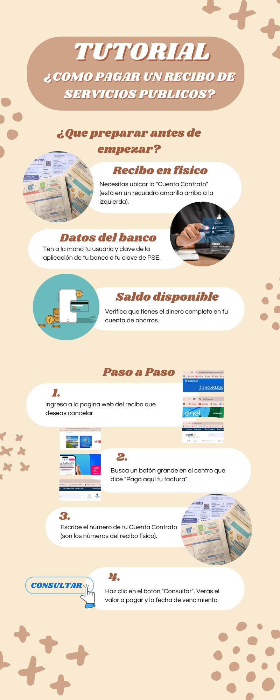
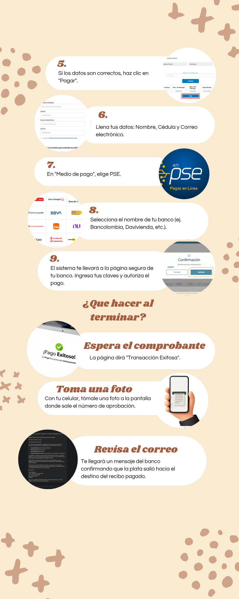

🏛️ Servicios Públicos
Seleccione el servicio que necesita pagar o consultar. Le explicamos cómo hacerlo sin salir de casa.
👇 Toque el servicio que necesita:
Acueducto de Bogotá — EAAB
Tarea: Pagar su factura del agua por PSE (débito bancario)
- Su factura del agua en papel (necesita el número de referencia de pago)
- Los datos de su cuenta bancaria: banco, número de cuenta y tipo (ahorros o corriente)
- La clave de su banco para autorizar el débito
- Conexión a internet estable
▶ Video tutorial: Pagar factura del Acueducto por PSE
Vea primero el video y luego siga los pasos de abajo.
🖼 Infografía: Cómo funciona el pago por PSE parte 1

Infografía: Pago PSE — Acueducto de Bogotá EAAB
🖼 Infografía: Cómo funciona el pago por PSE parte 2

Infografía: Pago PSE — Acueducto de Bogotá EAAB
📋 Pasos para pagar la factura del agua por internet
-
Abra el navegador y vaya a la página del Acueducto. Escriba acueducto.com.co en la barra de arriba y presione Enter.
-
Busque el botón "Pagos en línea" o "Pagar factura". Está en el menú principal de la página, generalmente en la parte superior o central.
-
Ingrese el número de referencia de pago de su factura. Ese número está impreso en su factura física. Escríbalo sin espacios.
-
Verifique el valor que aparece en pantalla. Compare el monto con el que aparece en su factura. Deben ser iguales.
-
Seleccione la opción de pago "PSE". PSE es un sistema seguro que debita el dinero directamente de su cuenta bancaria.
-
Elija su banco de la lista y presione "Continuar". El sistema lo llevará a la página oficial de su banco.
-
Ingrese su clave bancaria y autorice el pago. Siga las instrucciones de su banco. Cuando termine, verá un comprobante de pago.
- Tome una foto del comprobante de pago que aparece en pantalla
- Anote el número de transacción PSE como respaldo
- Si el pago no se completó, llame al Acueducto: 116 (gratis desde cualquier celular)
Enel Colombia
Tarea: Descargar el duplicado de su factura de energía si la perdió
- Su número de contrato o de cuenta de Enel (está en facturas anteriores o en el medidor)
- Su número de cédula de ciudadanía
- Tener instalada la app "Enel Colombia" en su celular, o usar el computador
- Un lugar tranquilo con buena iluminación para leer la pantalla
▶ Video tutorial: Descargar duplicado de factura Enel
Si perdió su recibo, en este video le mostramos cómo descargarlo gratis.
🖼 Infografía: Dónde encontrar el duplicado de su factura parte 1
Infografía: Duplicado de factura — Enel Colombia
📋 Pasos para descargar el duplicado de su factura de energía
-
Abra el navegador y vaya a enelcolombia.com. Escriba la dirección y presione Enter. También puede buscar "Enel Colombia" en Google.
-
Busque la opción "Mi cuenta" o "Duplicado de factura". Está en el menú de la página o en un botón de acceso rápido.
-
Ingrese su número de contrato o número de cuenta. Este dato aparece en facturas anteriores en la parte superior del recibo.
-
El sistema mostrará su factura del mes actual o anteriores. Seleccione el mes del que necesita el duplicado.
-
Presione el botón "Descargar" o "Ver factura" (ícono PDF 📄). El archivo se descargará en su dispositivo automáticamente.
-
Abra el archivo descargado para verlo o imprimirlo. En el celular aparecerá una notificación de descarga. En el computador búsquelo en "Descargas".
- Guarde el PDF de la factura en la carpeta "Facturas servicios" de su celular
- Si necesita pagar, use el código de barras que aparece en el duplicado en cualquier banco o corresponsal
- Si no puede descargarla, llame a Enel: 601 234 9020
Vanti (Gas Natural)
Tarea: Consultar la fecha de su revisión periódica obligatoria de gas
- Su número de contrato de Vanti (aparece en su factura del gas, en la parte superior)
- Su dirección completa del inmueble tal como aparece en el contrato
- Saber que la revisión es OBLIGATORIA por ley cada 5 años para su seguridad
- Conexión a internet en su celular o computador
▶ Video tutorial: Consultar revisión periódica en Vanti
Le explicamos cómo saber cuándo le toca la revisión obligatoria de gas.
🖼 Infografía: ¿Qué es la revisión periódica de gas?
Infografía: Revisión periódica obligatoria — Vanti Gas Natural
📋 Pasos para consultar su fecha de revisión periódica de gas
-
Abra el navegador y vaya a vanti.com.co. Escriba la dirección en la barra del navegador y presione Enter.
-
Busque la opción "Revisión periódica" o "Mis servicios". Puede estar en el menú principal o en una sección llamada "Atención al cliente".
-
Ingrese su número de contrato de Vanti. Este número está impreso en su factura del gas. Generalmente tiene 10 dígitos.
-
El sistema mostrará la información de su revisión. Verá si ya está vencida, cuándo fue la última y cuándo debe hacerse la próxima.
-
Si necesita agendar la revisión, busque el botón "Agendar visita". Seleccione el día y la franja horaria que le quede bien (mañana o tarde).
-
Confirme la cita y anote el número de radicado. Recibirá un SMS o correo con la confirmación de la visita del técnico.
- Anote en un papel la fecha y hora de la visita del técnico de Vanti
- El día de la visita, asegúrese de que haya un adulto en casa para recibir al técnico
- Si tiene dudas o quiere cancelar la cita, llame a Vanti: 164 (línea gratuita)
ETB
Tarea: Pagar su factura de internet o teléfono por WhatsApp
- Su celular con WhatsApp instalado y con conexión a internet
- Su número de contrato o número de línea ETB (aparece en su factura)
- Los datos de su tarjeta débito o crédito para pagar, o acceso a PSE
- Su factura a la mano para verificar el valor a pagar
▶ Video tutorial: Pagar factura ETB por WhatsApp
¡Así de fácil! Pague su factura sin salir de WhatsApp.
🖼 Infografía: Pasos del chatbot de ETB en WhatsApp
Infografía: Pago por WhatsApp — ETB
📋 Pasos para pagar su factura ETB por WhatsApp
-
Abra WhatsApp en su celular. Toque el ícono verde de WhatsApp en su pantalla de inicio.
-
Busque el contacto oficial de ETB. Toque el ícono de nuevo chat (lápiz o ícono de mensaje nuevo) y busque el número de ETB: 601 344 4000. Agréguelo como contacto primero si es necesario.
-
Envíe un mensaje con la palabra "Hola" o "Pagar". El chatbot de ETB le responderá automáticamente con un menú de opciones.
-
Seleccione la opción "Pagar factura" respondiendo con el número correspondiente. El chatbot le guiará paso a paso. Solo debe responder con números o palabras simples.
-
Ingrese su número de contrato o línea ETB cuando se lo pida. El sistema buscará su factura automáticamente y le mostrará el valor a pagar.
-
Confirme el valor y seleccione la forma de pago. Puede pagar con tarjeta o PSE. El chatbot lo dirigirá a un enlace seguro de pago.
-
Complete el pago y guarde el comprobante. ETB le enviará un mensaje de confirmación directamente a WhatsApp.
- Tome una captura de pantalla del mensaje de confirmación de ETB en WhatsApp
- Verifique en su estado de cuenta bancario que el débito se realizó correctamente
- Si no recibió confirmación, llame a ETB: 601 344 4000